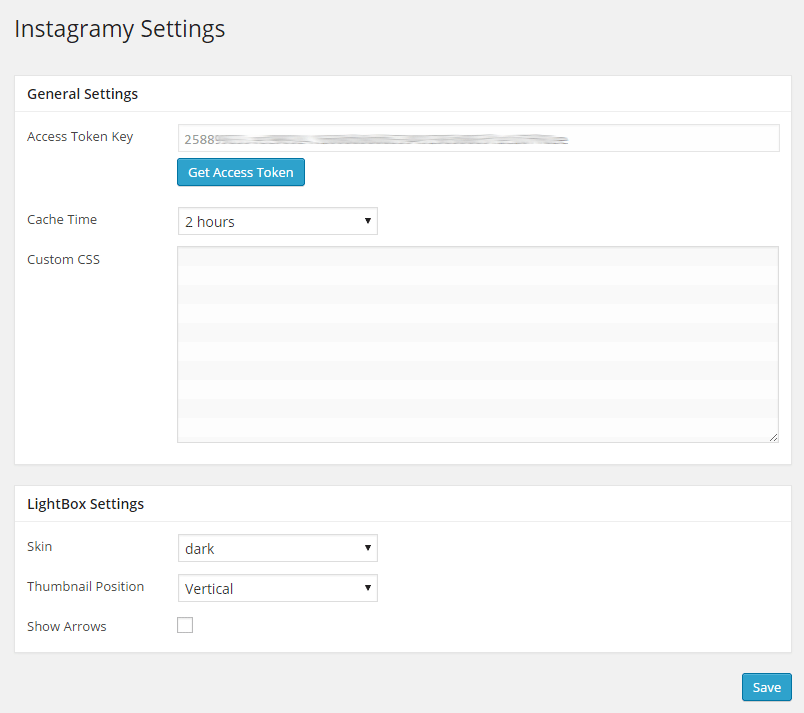
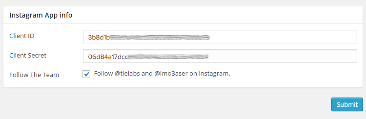

Instagramy Plugin
Simple, stylish, clean, customizable, and responsive WordPress plugin for displaying Instagram feed in a sidebar, post, or page.
Simple, stylish, clean, customizable, and responsive WordPress plugin for displaying Instagram feed in a sidebar, post, or page.
Check These Links For How to Install Instagramy Plugin .
From Instagramy settings page you can set the Instagram App Access Token Key , Cache time and Custom CSS Codes .

If this is the first time you are adding an app or plugin, Instagram will ask you a few questions. You can enter these responses, click "Sign Up", and then click "Manage Clients" again:


Fill in the "Register new OAuth Client" form with the following infomation and click "Register":


- It will redirect you to Instagram Authorization Request page .. Enter your Email and password and click on Authorize button. - It will redirect you back to the Instagramy Settings page.To Display "Instagramy User Feed" in your sidebar
To Display "Instagramy User Feed" in a post or a page
 icon
icon